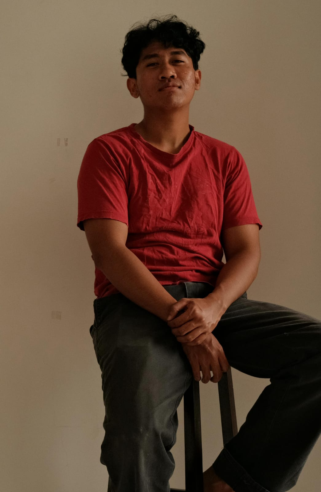

Alex John
Angger
Halo! Saya Angger Wicaksono Sutaji, seorang pengembang web dan antusias kecerdasan buatan (AI) yang bersemangat. Saya percaya bahwa teknologi yang luar biasa tidak hanya harus berfungsi secara teknis, tetapi juga menyelesaikan masalah pengguna dengan cara yang paling organik dan intuitif.
Berbekal latar belakang pendidikan (D3) Teknologi Informasi di Universitas Brawijaya, dedikasi saya terletak pada penciptaan ekosistem aplikasi web yang aksesibel serta implementasi solusi berbasis AI. Saya menikmati mengubah kompleksitas baris kode dan algoritma menjadi sesuatu yang sederhana, elegan, dan berdampak positif bagi keseharian penggunanya.
Minat
Pendidikan
D3 Teknologi Informasi
Universitas brawijaya
2025-2028